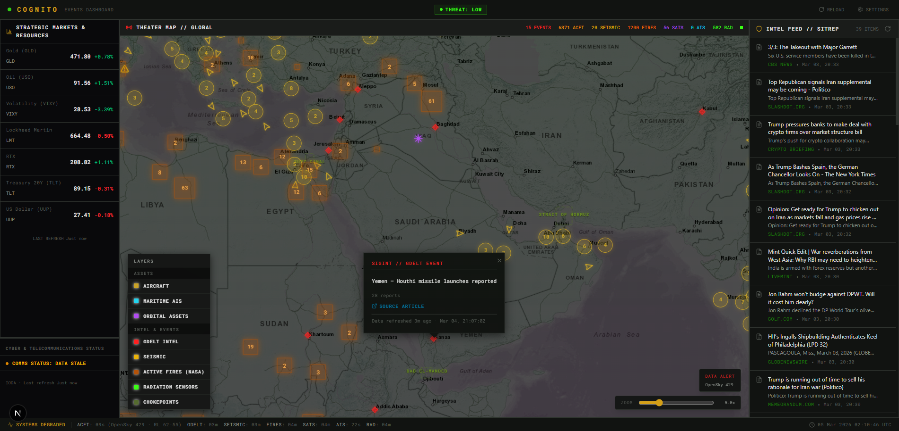
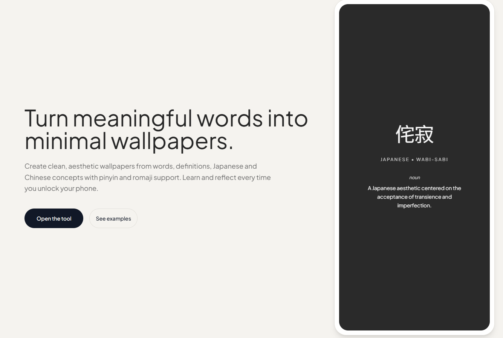
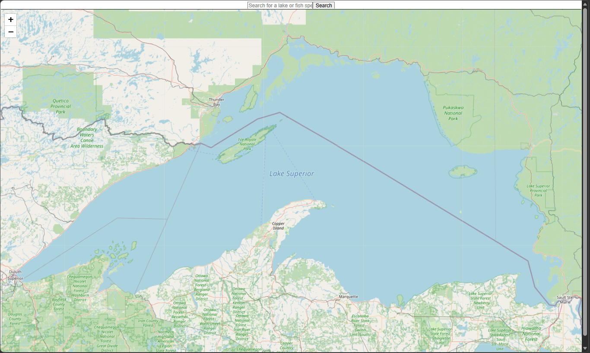
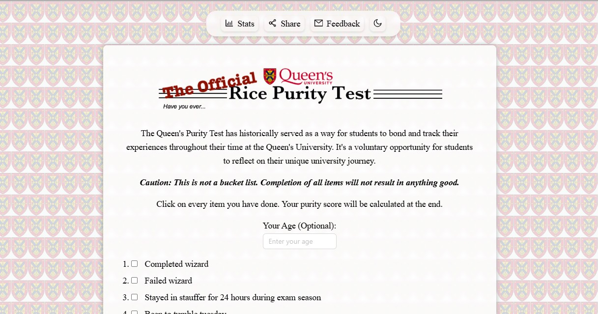
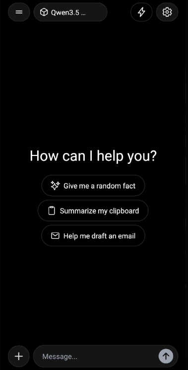
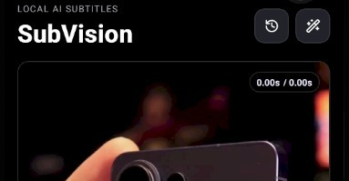
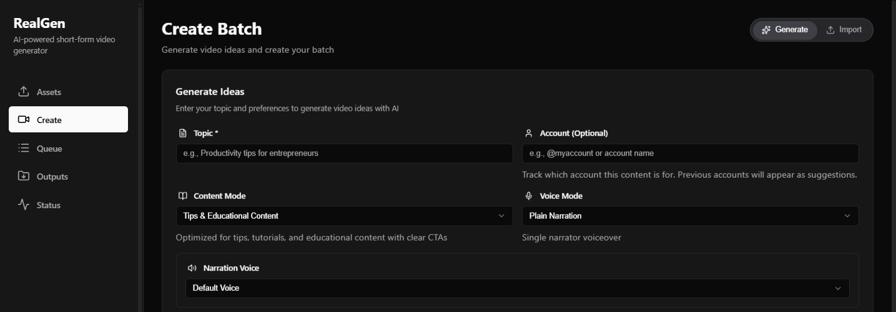

cognito
A real-time, mil-spec dashboard aggregating global OSINT, kinetic events, and logistics.
Ericsson — Ottawa, ON
Pathfinders — Fredericton, NB
Queen's University — Kingston, ON
Queen's University
Queen's AutoDrive
QMIND
Python, TypeScript, JavaScript, Java, C#, PHP, HTML/CSS.
LLMs, LangChain, llama.cpp, RAG, PyTorch, TensorFlow, OpenCV, Jupyter, MATLAB.
React, React Native, Next.js, Tailwind CSS, Node.js, ASP.NET.
AWS, GCP, Docker, Jenkins, Git, OpenSearch, Firebase, Linux.

A real-time, mil-spec dashboard aggregating global OSINT, kinetic events, and logistics.

Minimal browser-only React app generating word/definition wallpapers with light/dark themes.

Scraped provincial lake and species data normalized and visualized on an interactive map.

An interactive, viral web quiz designed for Queen’s University students to compare campus experiences.

Mobile app for on-device chat with quantized LLMs. Implemented RAG, VLM support, persona presets, and performance monitoring (tokens/s, latency, memory) with adaptive tuning packaged in an intuitive UI.

Simple on-device caption generation service for mobile use, realized using Whisper & FFmpeg.

Generated content briefs by prompting Ollama to emit structured JSON, then parsing into narration and scene timing; integrated TTS via the ElevenLabs API. Added on-screen captions using on-device Whisper transcription and rendered final videos using FFmpeg.